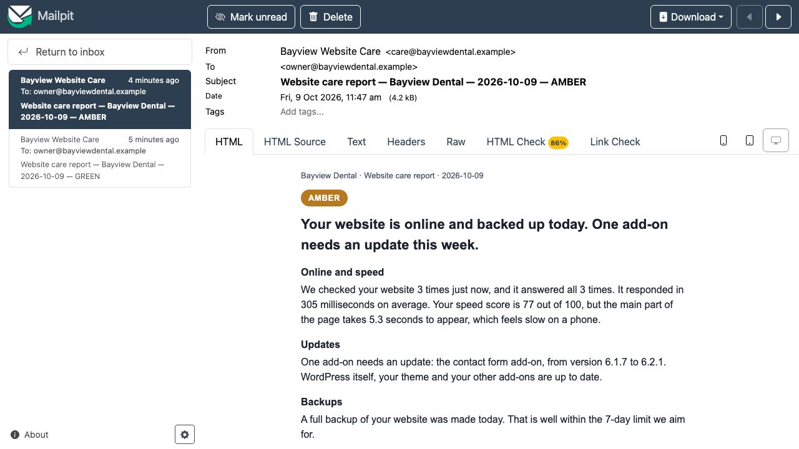
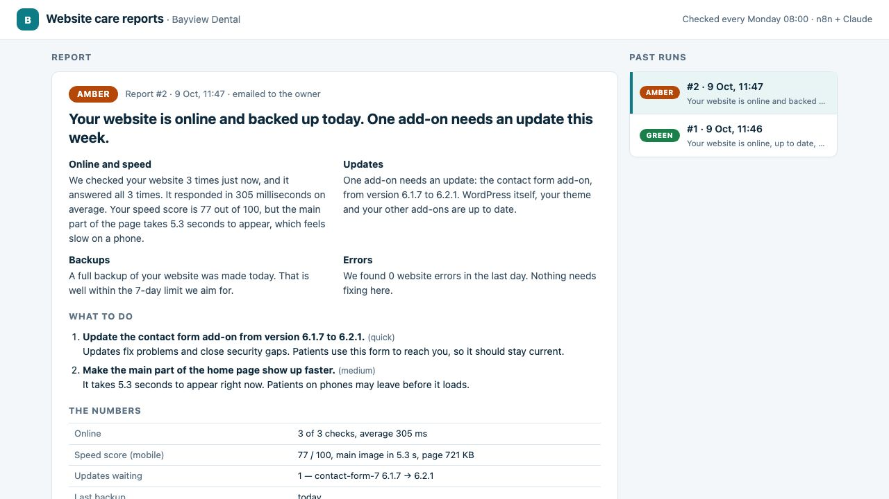

Website maintenance you can actually see: a plain-English report every Monday
Clinics pay for website maintenance and never see what was done. Now the owner gets one short email every Monday: is the site OK, and what needs doing this week. No jargon. A machine does the checking and the writing in under a minute.
For the owner, before and after
| Before | After |
|---|---|
| Pays for maintenance, doesn't know what was done | A Monday email saying what was checked |
| Finds out the site is broken when a patient calls | Green, amber or red at the top, so she knows in one glance |
| "Plugins", "PHP", "LCP": jargon she can't act on | A short to-do list in plain words, quickest jobs marked |
| Has to trust the numbers | The real numbers in a table under the report, and code checks the AI didn't invent any |
What the owner gets
This is the real amber report from the filmed run, word for word, after I put the Contact Form 7 plugin back to an older version:
Your website is online and backed up today. One add-on needs an update this week.
What to do
- Update the contact form add-on from version 6.1.7 to 6.2.1. (quick)
Updates fix problems and close security gaps. Patients use this form to reach you, so it should stay current. - Make the main part of the home page show up faster. (medium)
It takes 5.3 seconds to appear right now. Patients on phones may leave before it loads.
The healthy run before it was green: "Your website is online, up to date, backed up today, and showing no errors." Green means all 3 checks answered, nothing is waiting to update and a backup is less than 7 days old. Amber means something needs doing this week. Red means the site is down or the check itself failed.

What I'd set up for you
- A safe look-only login on your website: one small file and a separate user that can read the health check, but can't change anything or see your password.
- Your backups counted: the report says when the last backup ran. I'd connect it to the backup you already have (from your host or a backup plugin).
- The weekly email: sent from your own email account, to whoever you choose, every Monday morning.
- Your AI account, not mine: the AI writing runs on your own key, one AI call per report, billed to you so you can see it.
- Then the work itself: I do the to-do list that week, updates after a backup, and next Monday's email shows it done.
I haven't run this for a paying client yet; this demo is how I'd run it on yours. Technical details are further down.
FAQ
Can the AI make up numbers in my report?
Claude is told to use only numbers from the check data, and then code checks it: every number written with digits in the headline, sections and to-do list must appear in that run's data. If one does not, that sentence is swapped for a plain template line and the swap is counted on the report. In the two filmed reports nothing had to be swapped. Numbers written as words ("three") are not checked, and a number can still be one from elsewhere in the same run's data, so the table of real numbers is always in the email underneath.
Is this 24/7 uptime monitoring?
No. The report checks the site 3 times when it runs, a second apart, and says so. For round-the-clock alerts I would add a monitor like UptimeRobot or a short n8n schedule that only messages you when the site is down.
Does it update plugins by itself?
No. It reports what is waiting and what to do. The updates themselves are done by a person, after a backup, ideally tried on a copy of the site first, so an update cannot take the site down on a Monday morning.
Does it work with my Gmail and my host?
This demo sends to a local test mailbox (Mailpit). For a real client the Send Email node gets your mail provider's SMTP login or n8n's Gmail node; nothing else changes. That swap is documented, not run here. On your site it needs one small must-use plugin file and a separate WordPress user that can only read the health check.
Is this a real client site?
No. Bayview Dental is a demo clinic I built on WordPress, the same one as my site rescue and speed fix case studies. The checks, the reports and the emails are real runs against that site. There is no paying client here.
How it works
- Start: n8n's schedule fires every Monday at 08:00 (Asia/Manila), or a "run now" webhook starts it by hand.
- Online: 3 requests to the home page, a second apart, timed.
- Health: one request to the site's own health check (
/wp-json/bayview/v1/health, a must-use plugin), with an application password for the read-onlycare-botuser. It returns WordPress and PHP versions, each plugin and whether an update is waiting, theme and core updates, PHP errors in the last 24 hours and the time of the last backup. - Speed: one mobile Lighthouse run: speed score, how long the main part of the page takes to show, page weight.
- Write: Claude gets the data and a strict brief (plain English, a status, sections, a to-do list, only numbers from the data) and returns JSON.
- Check: code parses the JSON, checks every number against the data, and sets a status floor from the data (a waiting update or an old backup is at least amber whatever Claude says; it can raise the status, never lower it). If Claude fails, a template report is built from the data instead.
- Send and keep: saved to Postgres, emailed to the owner, shown in the report archive.

How this was done. The WordPress site (the demo clinic from my site rescue case study) runs in Docker on my machine, with n8n, Postgres and Mailpit. The two filmed runs took 25.9 s and 32.8 s from start to saved-and-emailed; the video cuts the waiting and says so.
Honest notes: it is a demo site and the emails go to a local test mailbox (Mailpit), not Gmail; the real SMTP or Gmail swap is documented, not claimed. Claude runs through a small local bridge on my Claude Max plan; for a client it would be their own API key in n8n's AI node. "Online" means 3 checks at report time, not 24/7 monitoring. The speed score is one Lighthouse run per report, so it moves from run to run (I saw 57 to 77 on the same site). The number check covers digits only, and the allowed numbers are the whole run's data.
Tools used
- n8n (self-hosted): Schedule, Webhook, Code, HTTP Request, Postgres, Send Email and Respond to Webhook nodes.
- Claude (Anthropic): writes the report as strict JSON.
- WordPress: a must-use plugin for the health check, an application password for a read-only user, WP-CLI for the backup.
- Lighthouse for the speed score, Postgres for the archive, Mailpit as a local test mailbox.
View the code on GitHub → (workflow, health-check plugin, install and backup scripts, number check with tests, MIT licence)
Video transcript
Full narration of the 88-second demo video, with start times.
A clinic pays for website maintenance every month, and never really knows what was done. So I made the work visible.
Every Monday at eight, an n8n workflow checks the site. Here I start it by hand.
It checks the site three times, reads the plugins, backups and errors, and runs a speed test. Claude writes the report, then it's saved and emailed.
And here it is, in the owner's inbox.
Green. All three checks answered, everything is up to date, and today's backup is on record. Each part in plain words, no jargon.
Then a short to-do list, and the real numbers underneath.
Now I put one plugin behind on purpose. Contact Form 7, back to an older version.
And run the check again.
Amber. The waiting update shows up straight away, and the to-do list says exactly which add-on to update.
Every report is kept in an archive, and every number in it is checked against the real data.
Built by McKeen Asma, WordPress and AI Automation VA, with n8n, and Claude.
Same clinic: WordPress site rescue (the site this report watches, brought back three times) · WordPress speed fix (the same site, made fast) · AI lead responder (the lead form) · clinic chat assistant (website chat and booking) · AI inbox triage (email and invoices)